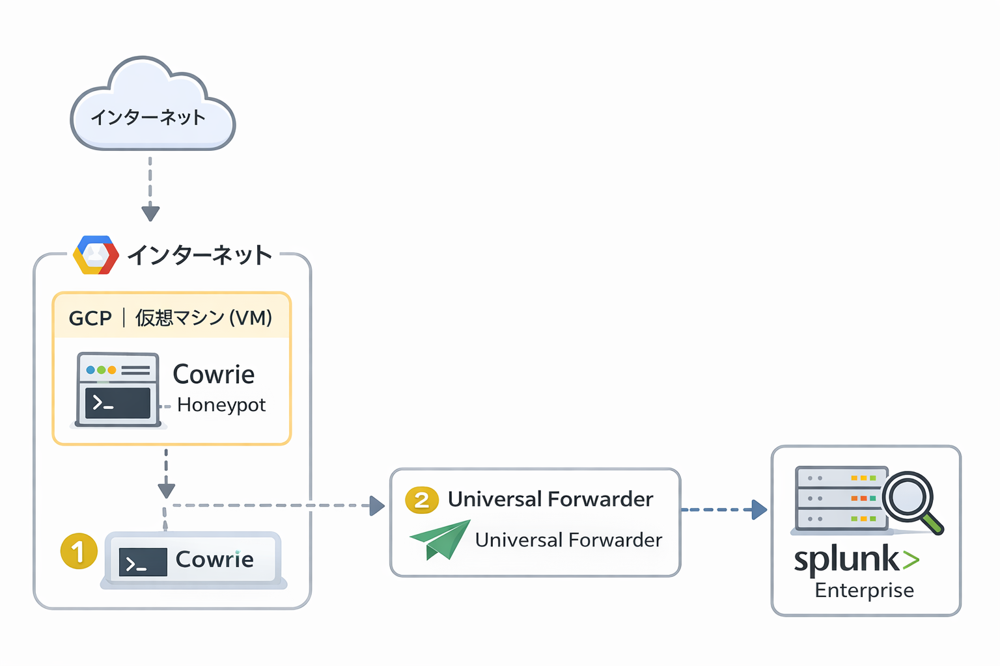
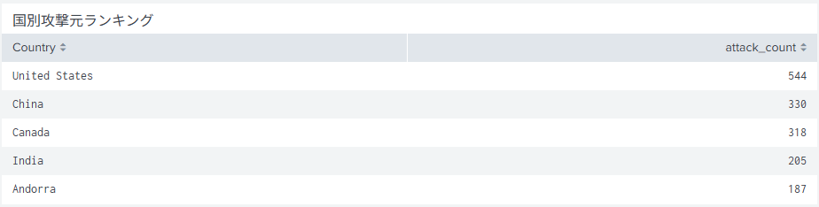

プロジェクト
実攻撃ログをもとに、分析 → 可視化 → 検知（SPL）まで落とし込むことを重視しています。
Cowrie Honeypot × Splunk 攻撃ログ分析
GCP上のCowrieで収集したSSH/Telnet攻撃ログをSplunkに集約し、攻撃傾向の可視化と検知クエリ（SPL）を作成しました。 “攻撃の手法”だけでなく“目的”に注目し、再現性のある分析に落とし込みます。
データセット概要
2026年1月4日から1月6日までの約3日間、GCP上に構築した Cowrie Honeypot を稼働させ、 SSH に関する実攻撃ログを収集・分析しました。 その結果、約2,700件の攻撃イベントを観測しました。
目的
- 実攻撃ログの収集と傾向分析（時間帯 / 攻撃元 / 試行内容）
- 検知に使えるSPLの作成（可視化・ランキング・異常検知）
- 成果物としてダッシュボード化
構成
- Honeypot：Cowrie（GCP）
- 転送：Universal Forwarder
- 分析：Splunk Enterprise（Dashboard / SPL）
成果物
攻撃一覧（SSH）
Cowrie Honeypot により観測された SSH に対する攻撃を、attack_type ごとに分類し件数を集計しました。
偵察（スキャン）や認証試行が多い一方で、侵入成功後の挙動（マルウェア取得・コマンド実行）も一部確認されています。
| 攻撃種別（attack_type） | 概要 | 件数（total） |
|---|---|---|
| SSH接続スキャン | SSHポートへの接続可否を確認する偵察 | 1,057 |
| セッション終了 | 接続後すぐに切断されたセッション | 485 |
| SSHブルートフォース（認証失敗） | ユーザ名・パスワードを大量に試行する攻撃 | 417 |
| SSH鍵交換（偵察） | 鍵交換まで行いサーバ情報を確認する挙動 | 282 |
| その他 | 上記に分類できないイベント | 265 |
| SSH侵入成功 | 認証成功によりセッションが確立 | 209 |
| マルウェアダウンロード | wget/curl等で外部からファイル取得を試行 | 18 |
| 侵入後コマンド実行 | 侵入後にコマンド実行を試行 | 12 |
| 不正ファイルアップロード | 不正なファイル転送を試行 | 1 |
※ Splunk上で attack_type ごとに集計した結果です（表示期間：2026/01/04〜2026/01/06）
上記の分析結果は、以下のSPLで eventid を攻撃種別に分類・集計した結果に基づきます。
SPL
index=* sourcetype="cowrie:json"
| eval attack_type=case(
eventid=="cowrie.login.failed","SSHブルートフォース（認証失敗）",
eventid=="cowrie.login.success","SSH侵入成功",
eventid=="cowrie.session.connect","SSH接続スキャン",
eventid=="cowrie.client.kex","SSH鍵交換（偵察）",
eventid=="cowrie.command.input","侵入後コマンド実行",
eventid=="cowrie.session.file_download","マルウェアダウンロード",
eventid=="cowrie.session.file_upload","不正ファイルアップロード",
eventid=="cowrie.session.closed","セッション終了",
true(),"その他"
)
| stats count as total by attack_type
| sort - totalダッシュボード（攻撃一覧 / 推移）

システム構成図
主な分析結果
- 3日間で約2,700件のSSH関連の攻撃を観測し、そのうちSSH接続スキャンが1,057件（約40%）を占めました。まず偵察を行い、その後に認証試行（ブルートフォース）が続く傾向が見られました。（attck_type集計より）
- 認証成功に相当するイベントが209件観測され、さらに一部のセッションでは侵入後の操作（外部ファイル取得、コマンド実行、不正アップロード）が確認できました。
攻撃の深掘り
1)国別攻撃元ランキング
観測できた約2,700件がどこからされたのかを国別でTOP5を調べました。しかし、BOTや踏み台サーバにされている可能性もあるため、大本の攻撃者の国かどうかは今回は判断できておりません。
2) ブルートフォースで使われたユーザネームとパスワード
ユーザネームとパスワードは別々で試行回数のランキングを作りました。
まずは、ユーザネームからです。
index=* sourcetype=cowrie:json
| stats count as events by src_ip
| sort - events
| head 20攻撃元IPの上位を抽出し、偏りや継続的な攻撃元を把握します。
3) 侵入後コマンド（観測できる場合）
index=* sourcetype=cowrie:json eventid="cowrie.command.input"
| stats count as hits by input
| sort - hits
| head 30侵入後に入力されたコマンドを集計し、目的（ダウンロード/展開/永続化）の推定に使います。
再現手順・関連リンク
- GitHub（手順・構成・SPLまとめ）： https://github.com/ryusei-kitagawa
- データの扱い：攻撃元IP等は必要に応じてマスクして共有
- 今後：Suricata連携、GeoIPで国別傾向、アラート化（Saved Search）
今後の展開
次は、Splunk上で「攻撃一覧の自動分類」「アラート（閾値・急増検知）」「Suricataログとの相関分析」を追加予定です。